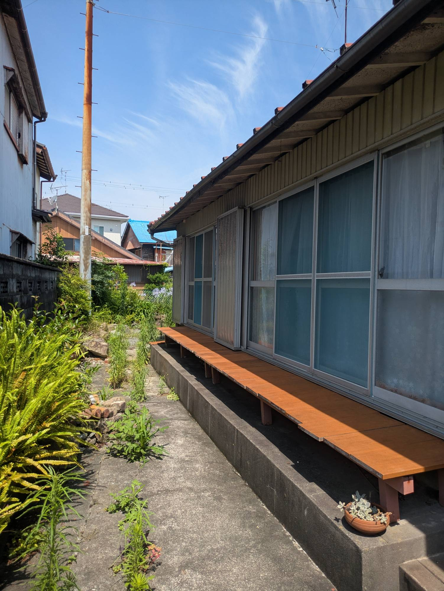

アキヤド買取プラン
- 受け取り方
売却代金をまとめて受け取る 例：現地を拝見して査定
こんな方に
- 将来使う予定がない
- 管理や
相続の 手間を なくしたい
空き家を

アキヤド買取プランに
How it works


How much?
Message


約14か月
初期投資を回収
約98%
約53%
計画の
★4.88
Airbnb の評価
51件・掲載時点
和モダンな
室内が とても オシャレで、 快適でした！ お部屋の 居心地が よく、 下田旅行の 素敵な 思い出に なりました。
Compare
| 選択肢 | 現金に | 古い家の | 売る以外の |
|---|---|---|---|
| 仲介で | 時期が | 値段が | なし |
| 一般的な | 早い | 改修費を | なし |
| アキヤド | 早い | 宿として | 貸す案も |
| アキヤド | 毎月の | 家を | 売る案も |
Plans
こんな方に
Flow
費用無料
費用無料
FAQ
現地の